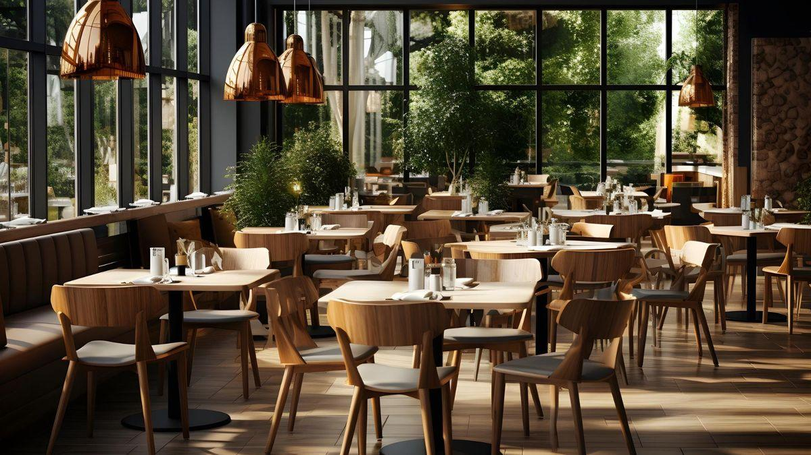

Kenali kuliner anak kampus.
Platform informasi kuliner yang memudahkan mahasiswa menjelajahi, membandingkan, dan menemukan tempat makan sesuai kebutuhan.

Temukan Kuliner favorit di Sekitar Kampus
JakPus hadir sebagai platfrom informasi kuliner yang membantu mahasiswa menemukan berbagai macam jajanan dan makanan di sekitar kampus.
Mulai dari ayam geprek, tongseng, bakso, mie, roti bakar, hingga berbagai minuman kekinian. JakPus menyediakan informasi seputar tempat kuliner, kategori makanan, daftar harga, serta rating dan ulasan pengunjung.
Melalui fitur direktori, review, statistik, dan peta kuliner, mahasiswa dapat menjelajahi berbagai pilihan kuliner dengan lebih mudah dan praktis.
TEMUKAN PILIHAN KULINERMU dan JELAJAHI RASA BERSAMA JAKPUS!
Mulai eksplorasiApa yang bisa dilakukan?
01 · Temukan
Cari tempat makan menggunakan kata kunci dan filter kategori, harga, serta rating.
02 · Berbagi
Tambahkan review berdasarkan pengalaman kunjungan agar pengguna lain terbantu.
03 · Pantau
Lihat statistik sederhana dan persebaran lokasi kuliner pada peta interaktif.